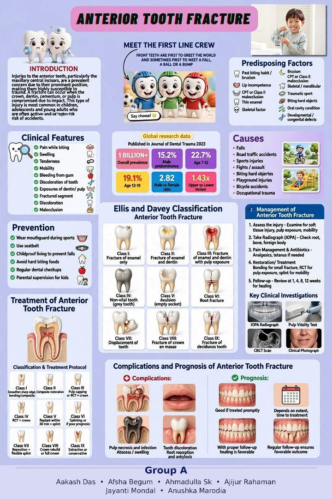

Understanding traumatic injuries of the anterior teeth, from clinical presentation and classification to diagnosis, treatment and long-term prognosis.
Explore the Guide →An overview of one of the common forms of dental traumatic injury.
An anterior tooth fracture is a break or structural injury involving the front teeth, particularly the maxillary central incisors. Due to their prominent position, these teeth are vulnerable to traumatic impacts.
Depending on the severity, the fracture may involve enamel, dentin, cementum or the dental pulp. Prompt assessment is important to protect tooth function and appearance.
Anterior teeth contribute to aesthetics, speech and biting function. Appropriate diagnosis and treatment can help preserve the natural tooth.
Common findings that may be identified during dental examination.
Pain or sensitivity, particularly while biting.
Soft tissue swelling around the affected region.
Bleeding from the gingival or surrounding tissues.
Abnormal mobility may indicate associated injury.
Changes in tooth colour may develop following trauma.
Deeper fractures may expose the dental pulp.
Trauma can occur in different everyday environments and activities.
The severity of an injury depends on the direction, intensity and location of impact, as well as the condition of the tooth and supporting structures.
A commonly taught classification of traumatic injuries to anterior teeth.
Fracture involving enamel only.
Fracture involving enamel and dentin without pulp exposure.
Fracture involving enamel and dentin with pulp exposure.
Traumatic loss of the crown, with a non-vital tooth.
Tooth avulsion or complete displacement from its socket.
Fracture involving the root of the tooth.
Displacement of the tooth without a fracture.
Fracture involving the crown in a major segment.
Traumatic injuries involving deciduous teeth.
A structured approach to evaluating and managing dental trauma.
Review the history of trauma, examine soft tissues, tooth structure, mobility and occlusion.
Use appropriate dental radiographs and pulp sensibility tests as indicated.
Provide appropriate pain relief and assess associated soft tissue injuries.
Depending on the injury, treatment may include bonding, composite restoration, pulp therapy, root canal treatment or other specialist procedures.
Monitor healing, pulp status, tooth colour, mobility and surrounding tissues over time.
Evaluates root structure and surrounding periapical tissues.
Assesses the response of the pulp to appropriate testing.
Documents the initial injury and subsequent changes.
Simple precautions can reduce the risk of traumatic dental injuries.
Wear a properly fitted mouthguard during contact sports.
Always use seatbelts while travelling.
Reduce fall hazards and supervise young children.
Avoid biting excessively hard objects or using teeth as tools.
Maintain regular dental examinations.
Encourage safe play and age-appropriate activities.
Explore the original reference poster used for this educational website.
